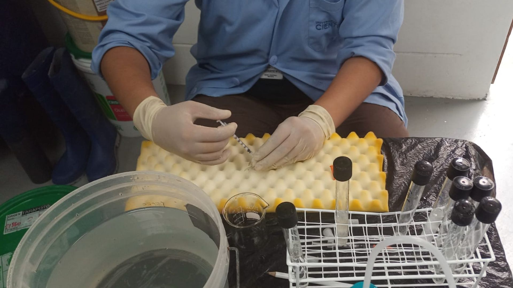
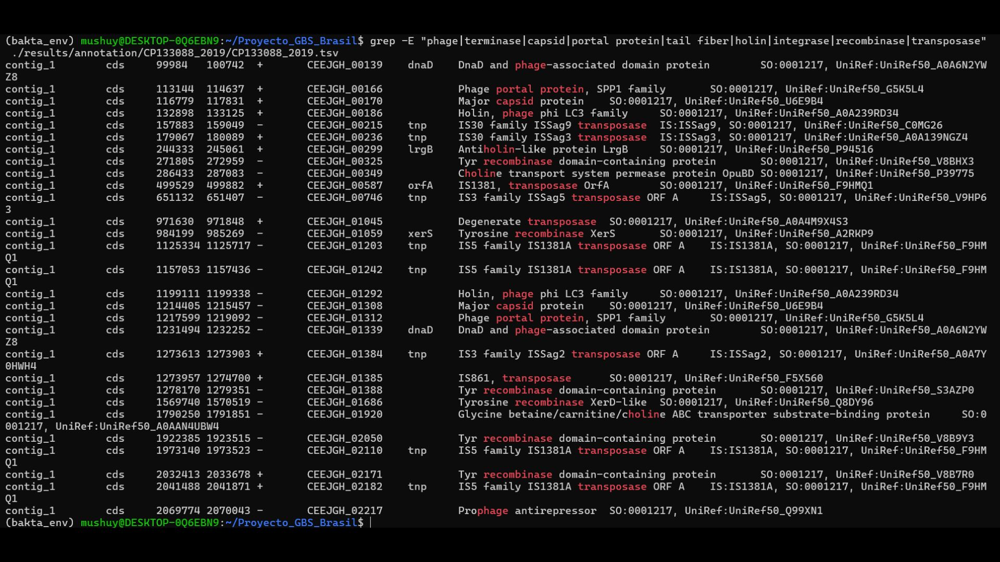
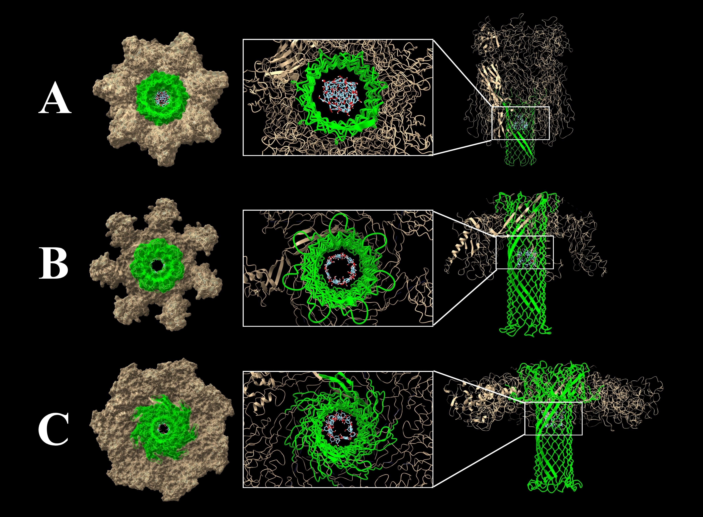
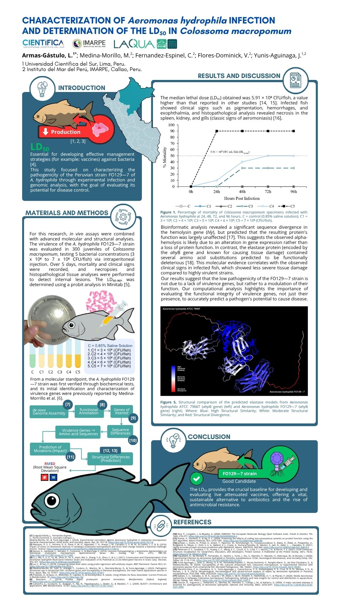
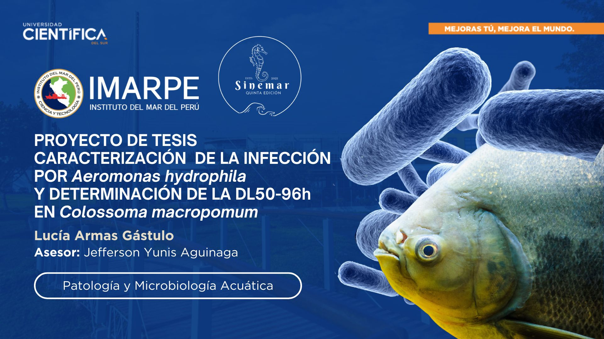
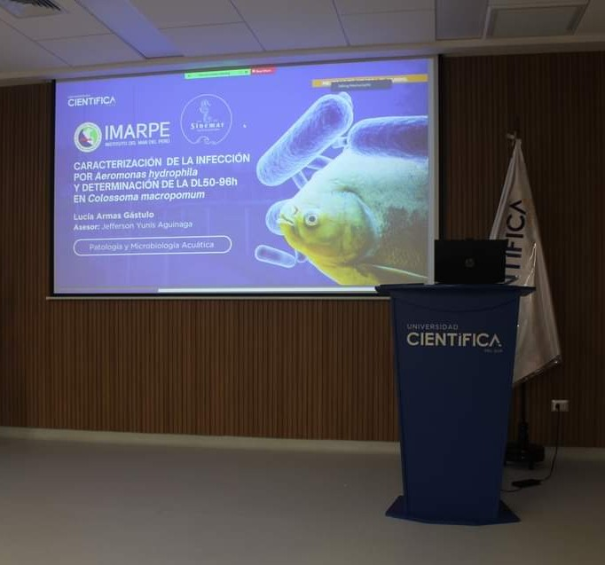
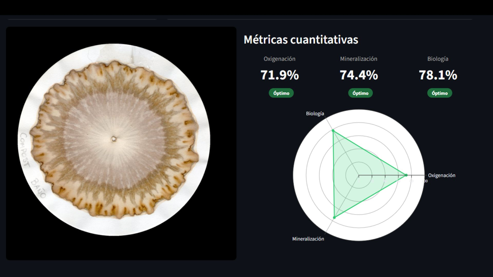
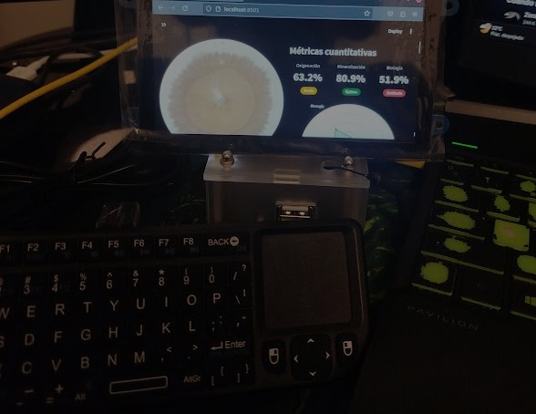

> ACCESSING_TERMINAL_01...
Advancing Aquatic Health through Pathobiology & Bioinformatics.
Erasmus Mundus AquaH Candidate | Ghent University
Engert, C. J., Armas-Gástulo, L., & Yunis-Aguinaga, J. (2025). Reviews in Fisheries Science & Aquaculture.
> ACCESS_PUBLICATION_DOI
A 17-Year Chromosomal Expansion in the Brazilian Nile Tilapia Industry.

A bioprospecting approach through in silico molecular docking.

Characterization of Aeromonas hydrophila Infection and Determination of the LD50 in Colossoma macropomum.


Thesis Project: "Characterization of Aeromonas hydrophila Infection and Determination of the LD50-96h in Colossoma macropomum".
V Marine Biology Symposium - UCSUR [2023]
Scientific Research Grant [2022]
PROCIENCIA - CONCYTEC [2022]

• Computer Vision: OpenCV implementation for radial chromatogram detection and texture pattern extraction.
• Statistical Analysis: Scipy/Numpy models to quantify soil health via gray intensity profiling.
• UX/UI: Streamlit interface optimized for Cyberdeck (Ubuntu) for real-time offline diagnostics.

Design and implementation of portable hardware for environmental monitoring and data collection in remote locations.